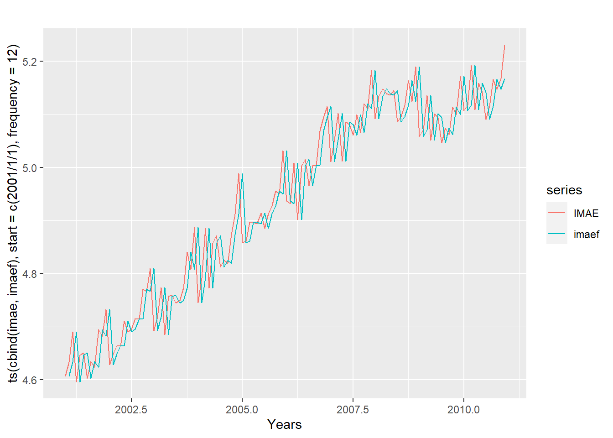
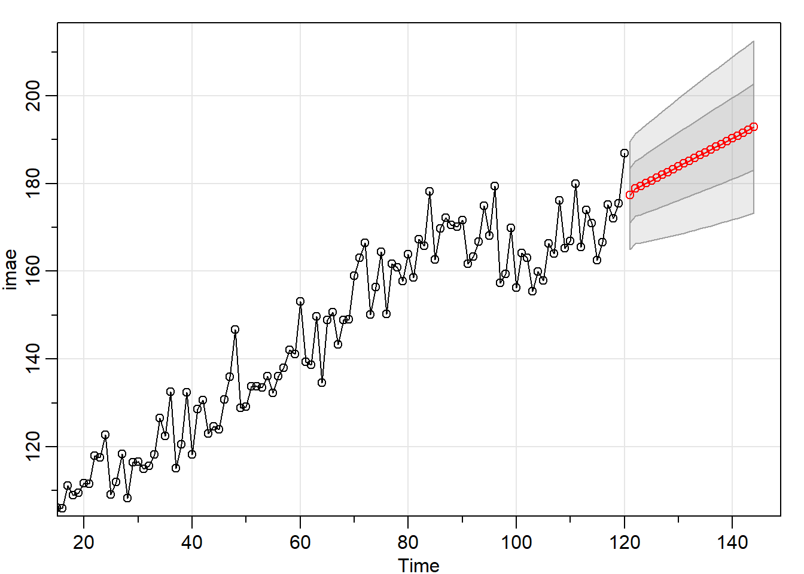
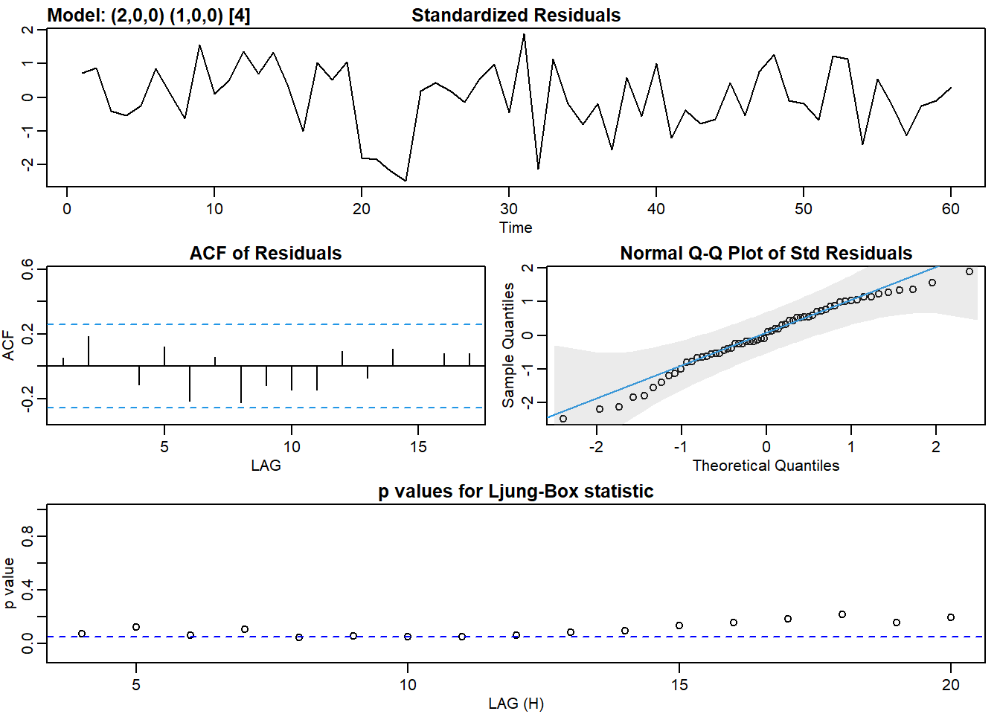
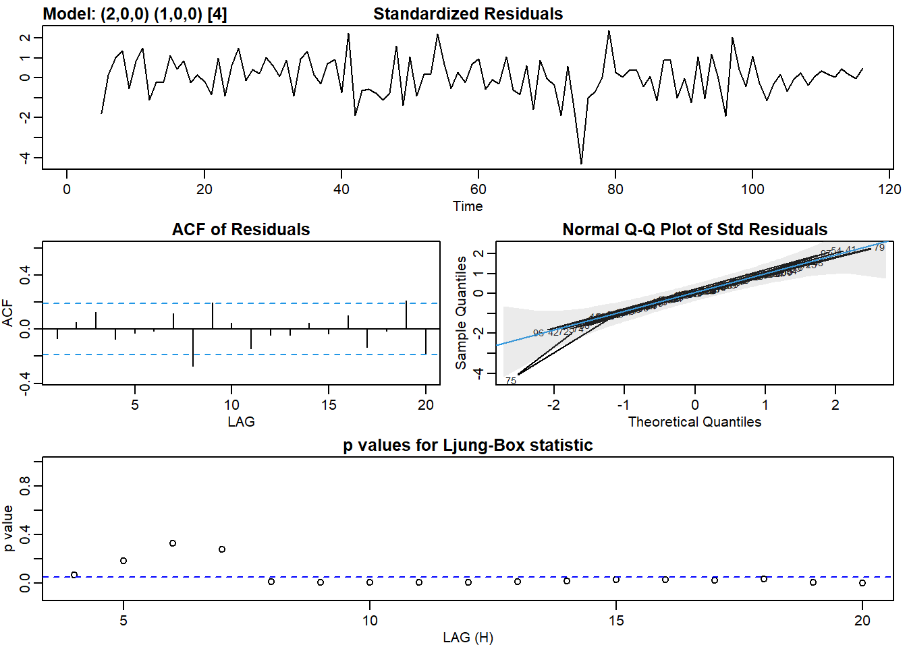
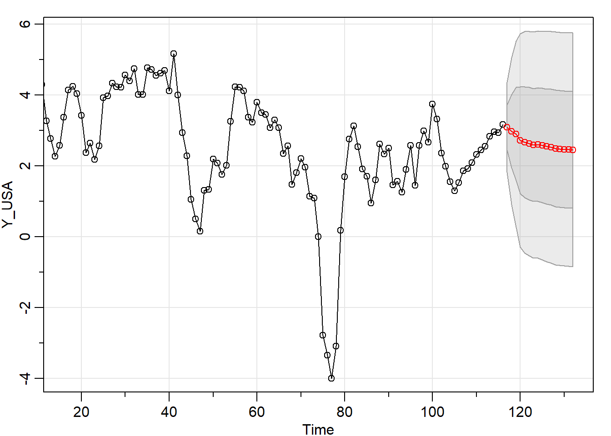
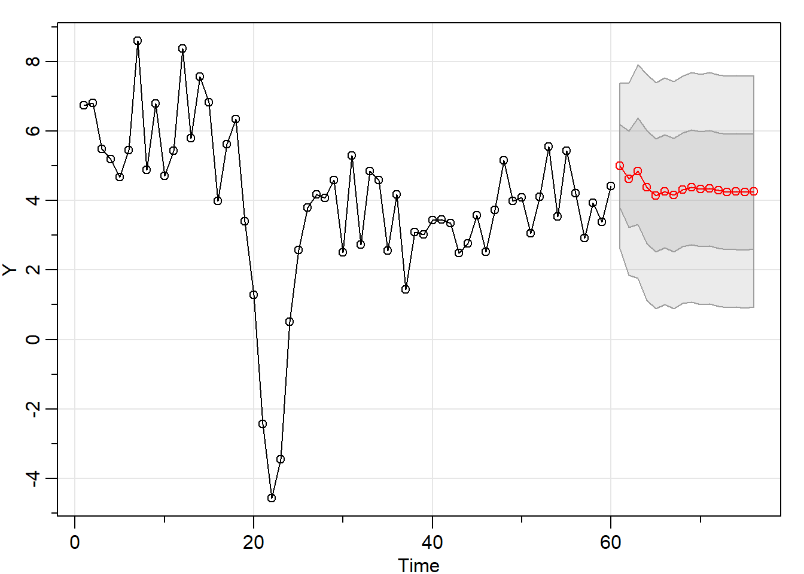
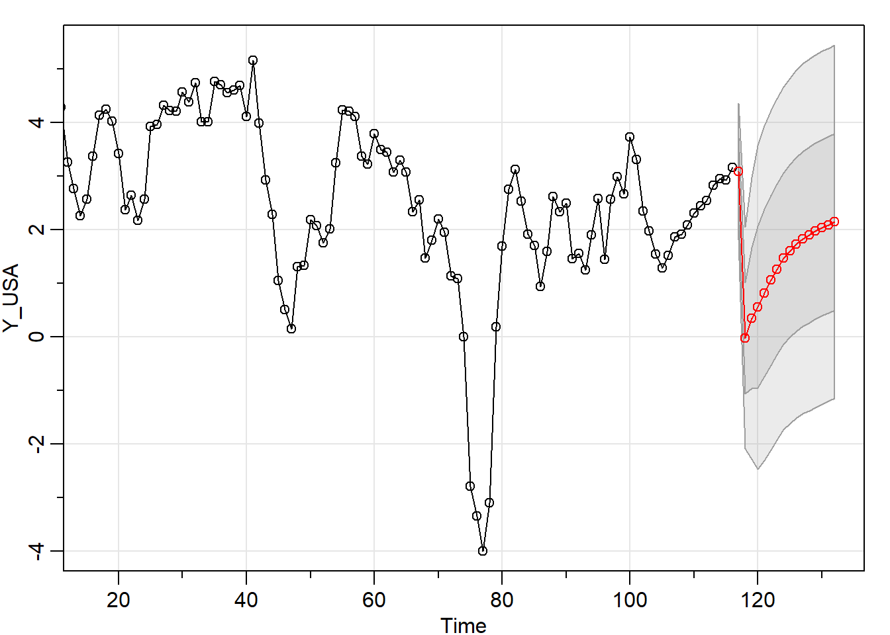
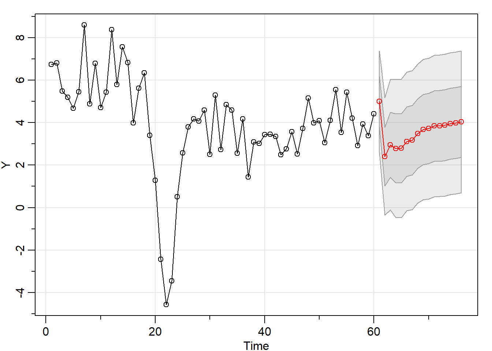

Chapter 2 Pronósticos
2.1 Modelos introductorios
Pronósticos Naive del IMAE de Honduras vs data observada
imae<-log(MES$IMAE["2001-01-01/2010-12-01"])
IMAE_NAIVE<-naive(imae)
imaef<-ts(fitted(IMAE_NAIVE), frequency=12, start=c(2001/01/01))
imaef<-as.xts(imaef)
autoplot(ts(cbind(imae, imaef), start = c(2001/01/01), frequency = 12 ),
facets = FALSE)+xlab("Years")
Pronósticos del IMAE de Honduras 24 meses en adelante a partir de un proceso SARIMA(1,1,1)
imae<-IMAE["2001-01-01/2010-12-01"]
imaef<-IMAE["/2012-12-01"]
resultado<-sarima.for(imae, n.ahead=24,1,1,1)
2.2 Modelos para hacer pronósticos del PIB de Honduras
Modelo de regresión
library(knitr)
library(dplyr)
library(broom)
library(AER)
TRIM<-as.xts(read.zoo("FINAL_HN_P.csv", index.column = 1, sep = ";", header=TRUE, format = "%d/%m/%Y"))
M.ols <- lm(log(TRIM$PIB) ~ log(TRIM$PIB_USA))
kable(tidy(M.ols), digits=4, align='c',caption="Regresión entre el nivel del PIB de Honduras con respecto al de USA")| term | estimate | std.error | statistic | p.value |
|---|---|---|---|---|
| (Intercept) | -9.6056 | 0.4685 | -20.5041 | 0 |
| log(TRIM$PIB_USA) | 2.0873 | 0.0485 | 43.0384 | 0 |
Modelo de regresión para el PIB de Honduras
INDEX <-factor(index(TRIM))
dummies<-model.matrix(~INDEX)
TRIM <-merge(TRIM, dummies, join="left")
Y <-window(diff(log(TRIM$PIB), lag=4)*100, start="2004-03-01", end="2018-12-01")
Y_USA <-window(diff(log(TRIM$PIB_USA), lag=4)*100, start="2004-03-01", end="2018-12-01")
DUM_HN <-window(TRIM[, c("INDEX2005.09.01", "INDEX2006.12.01", "INDEX2008.06.01")], start="2004-03-01", end="2018-12-01")
i_HN <-window(diff(TRIM$TASA_P, lag=1)*100, start="2004-03-01", end="2018-12-01")
REG_HN <- merge(DUM_HN, Y_USA, join="left")
REG_HN <- merge(REG_HN, i_HN, join="left")
PIB_HN <-sarima(Y, 2,0,0,P=1, D=0, Q=0, 4, xreg=REG_HN)## initial value 0.542818
## iter 2 value 0.399627
## iter 3 value 0.369226
## iter 4 value 0.292117
## iter 5 value 0.266433
## iter 6 value 0.252289
## iter 7 value 0.225647
## iter 8 value 0.225239
## iter 9 value 0.217205
## iter 10 value 0.210556
## iter 11 value 0.209208
## iter 12 value 0.204386
## iter 13 value 0.204299
## iter 14 value 0.204282
## iter 15 value 0.204281
## iter 16 value 0.204281
## iter 17 value 0.204281
## iter 18 value 0.204281
## iter 19 value 0.204281
## iter 19 value 0.204281
## iter 19 value 0.204281
## final value 0.204281
## converged
## initial value 0.186966
## iter 2 value 0.186057
## iter 3 value 0.185621
## iter 4 value 0.185490
## iter 5 value 0.185264
## iter 6 value 0.185174
## iter 7 value 0.185124
## iter 8 value 0.185091
## iter 9 value 0.185069
## iter 10 value 0.185068
## iter 11 value 0.185068
## iter 12 value 0.185068
## iter 13 value 0.185068
## iter 13 value 0.185068
## iter 13 value 0.185068
## final value 0.185068
## converged
PIB_HN$ttable## Estimate SE t.value p.value
## ar1 0.5867 0.1333 4.4015 0.0001
## ar2 0.2160 0.1364 1.5839 0.1194
## sar1 -0.3799 0.1277 -2.9750 0.0045
## intercept 2.4738 0.6710 3.6869 0.0006
## INDEX2005.09.01 3.3296 0.9658 3.4473 0.0011
## INDEX2006.12.01 2.0824 1.0148 2.0521 0.0453
## INDEX2008.06.01 2.2639 1.0536 2.1487 0.0364
## PIB_USA 0.7381 0.1920 3.8438 0.0003
## TASA_P 0.0056 0.0028 1.9794 0.0532Modelo de regresión para el PIB de USA
Y_USA <-window(diff(log(TRIM$PIB_USA), lag=4)*100, start="1990-03-01", end="2018-12-01")
DUM_USA <-window(TRIM[, c("INDEX2008.12.01", "INDEX2009.12.01")], start="1990-03-01", end="2018-12-01")
PIB_USA <-sarima(Y_USA, 2,0,0,P=1, D=0, Q=0, 4, xreg=DUM_USA )## initial value 0.434672
## iter 2 value 0.189957
## iter 3 value 0.021610
## iter 4 value -0.116248
## iter 5 value -0.251754
## iter 6 value -0.332615
## iter 7 value -0.410324
## iter 8 value -0.433150
## iter 9 value -0.436896
## iter 10 value -0.439417
## iter 11 value -0.440979
## iter 12 value -0.441051
## iter 13 value -0.441096
## iter 14 value -0.441109
## iter 15 value -0.441110
## iter 16 value -0.441110
## iter 17 value -0.441111
## iter 18 value -0.441115
## iter 19 value -0.441117
## iter 20 value -0.441118
## iter 21 value -0.441119
## iter 22 value -0.441119
## iter 22 value -0.441119
## iter 22 value -0.441119
## final value -0.441119
## converged
PIB_USA$ttable## Estimate SE t.value p.value
## ar1 1.2831 0.0888 14.4513 0.0000
## ar2 -0.3694 0.0899 -4.1111 0.0001
## sar1 -0.3721 0.0925 -4.0228 0.0001
## intercept 2.4027 0.4862 4.9417 0.0000
## INDEX2008.12.01 0.3768 0.3851 0.9784 0.3301
## INDEX2009.12.01 -0.1896 0.3823 -0.4958 0.6210Pronóstico del PIB de USA
DUM_USA_N <-window(TRIM[, c("INDEX2008.12.01", "INDEX2009.12.01")], start="2019-03-01", end="2022-12-01")
Y_USA_N <-sarima.for(Y_USA,16,2,0,0,1,0,0,4, xreg=DUM_USA, newxreg=DUM_USA_N) 
Pronóstico del PIB de Honduras
dates <- seq(as.Date("2019-03-01"), length = 16, by = "quarter")
DUM_HN_N <-window(TRIM[, c("INDEX2005.09.01", "INDEX2006.12.01", "INDEX2008.06.01")], start="2019-03-01", end="2022-12-01")
Y_USA_N <- xts(x=Y_USA_N$pred, order.by = dates)
REG_HN_N<- merge(DUM_HN_N, Y_USA_N, join="left")
data <- rep(1, 16)
i_HN_N = xts(x = data, order.by = dates)
REG_HN_N<- merge(REG_HN_N, i_HN_N, join="left")
Y_N<-sarima.for(Y,16,2,0,0,1,0,0,4, xreg=REG_HN, newxreg=REG_HN_N) 
2.3 Simulación de shock en el PIB de USA
Simulación
dates <- seq(as.Date("2019-03-01"), length = 16, by = "quarter")
shock <-c()
shock[1]<- 0
shock[2]<- -3*(1/-0.1896)
for(i in 3:16 ){
shock[i]<-0.85*shock[i-1]
}
shock_Y_USA= xts(x = shock, order.by = dates)
REG_SHOCK<-window(TRIM[, c("INDEX2008.12.01")], start="2019-03-01", end="2022-12-01")
REG_SHOCK<- merge(REG_SHOCK, shock_Y_USA, join="left")
Y_USA_SHOCK<-sarima.for(Y_USA,16,2,0,0,1,0,0,4, xreg=DUM_USA, newxreg=REG_SHOCK) 
Transimisión del shock al PIB de Honduras
Y_USA_S <- xts(x=Y_USA_SHOCK$pred, order.by = dates)
REG_HN_S<- merge(DUM_HN_N, Y_USA_S, join="left")
REG_HN_S<- merge(REG_HN_S, i_HN_N, join="left")
Y_S<- sarima.for(Y,16,2,0,0,1,0,0,4, xreg=REG_HN, newxreg=REG_HN_S) 